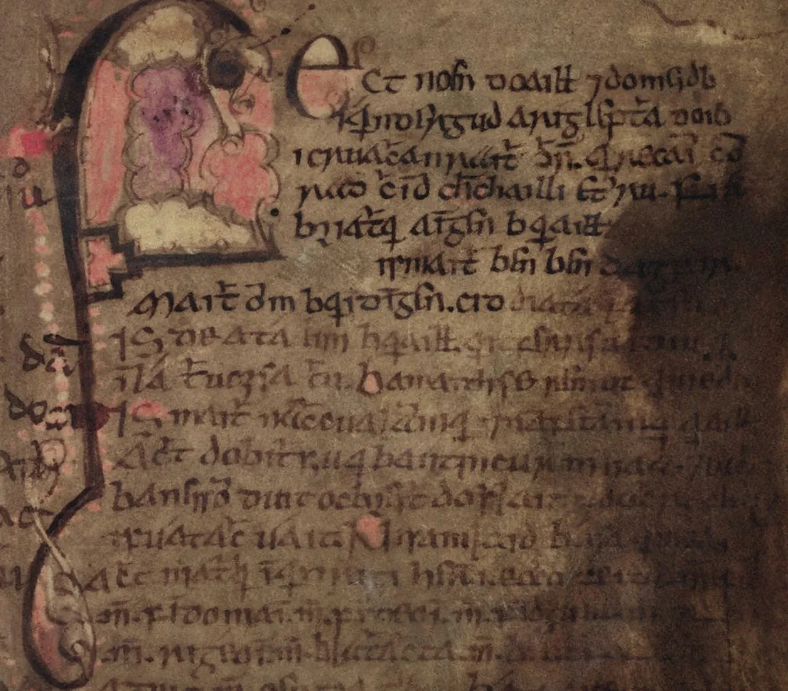
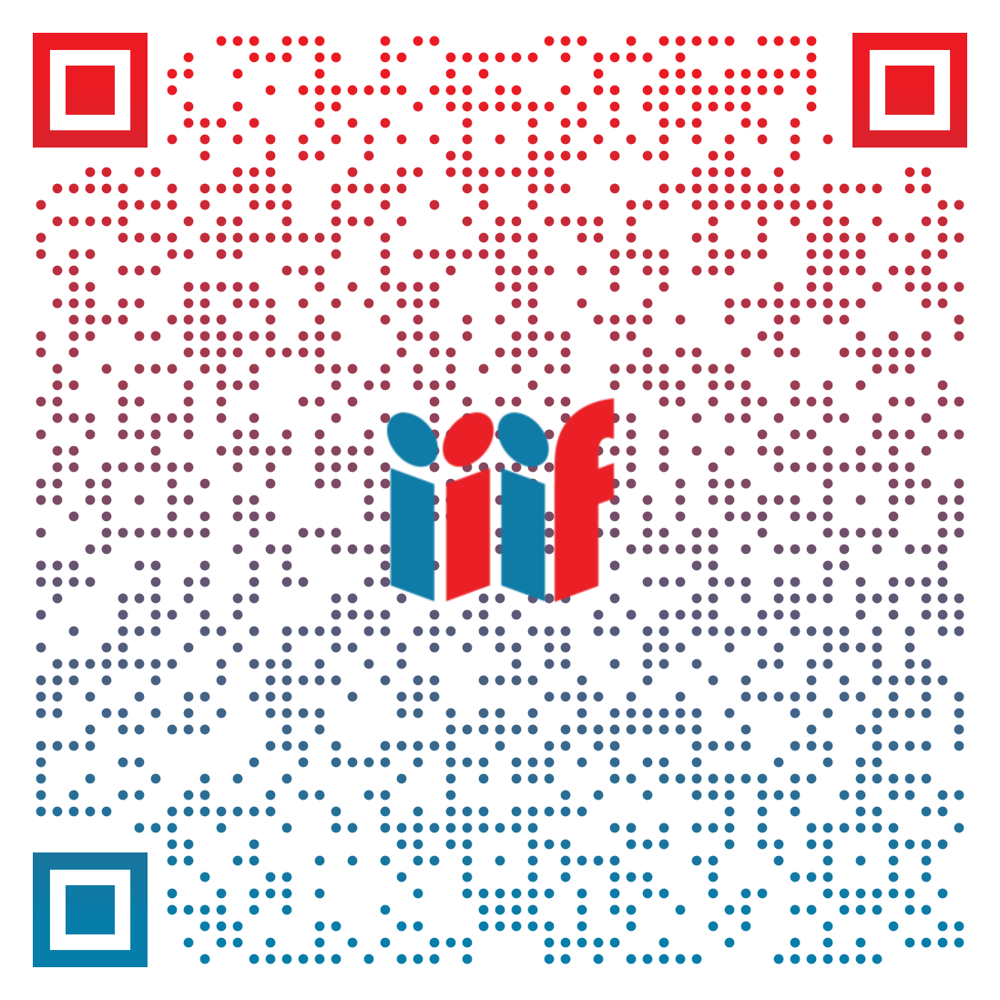

A Birds of a Feather Session
Examining how IIIF serves as core infrastructure for automated reuse and ethical stewardship.
Move beyond "finished solutions" to identify shared challenges and community-led design principles.
You all represent an amazing distribution of perspectives, critical for diving into these discussions:
Focused on structural analysis, computational humanities, model testing, and preservation of research context.
Focused on downstream delivery pipelines, API constraints, parsing codebases, and programmatic scalability.
Focused on long-term systemic data stewardship, widescale crawling parameters, and national collection policies.
Focused on narrative-driven curation, sensitive collections, local provenance, and community storytelling.
As cultural heritage institutions increasingly rely on automated tools for discovery and structural analysis, IIIF is transforming from a traditional image delivery layer into a foundational runtime infrastructure.
Decisions made at the presentation and collection layers dictate how heritage materials are programmatically digested, parsed, and surfaced by downstream AI systems.

Collaborative exploration focused on utilizing the IIIF Presentation API to synthesize composite, narrative-driven collections.
By blending deep-zoom images with synchronous audiovisual materials—including oral histories and local community storytelling—this research intentionally forces questions regarding context preservation in machine learning environments.
15m: Framework setting and introduction.
15m: Democratic topic ideation and stickies.
10m: Networking and board configuration break.
60m: Time-boxed, hyper-focused 8-minute cycles.
20m: Principles and consortium next steps.
Use the paper sticky notes
available on your tables.
Write down your core infrastructural frustrations, structural questions,
or algorithmic anxieties regarding IIIF assets.
Rule: One distinct concept per individual note. Write clearly!
Review the categorized blocks on the wall. Place up to three dots on the specific themes or unique questions you wish to bring to the floor first.
Grab refreshments and connect with fellow practitioners. During this window, we are computing the vote distribution to establish our conversational timeline queue.
Add notes, decisions, and action items to the shared Google document while we move through the discussion cycles.
bit.ly/iiif-ai-ethics-notes
Pull Top Topic
8-Minute Cap
Roman Consensus
Cycle Next Card
Roman Voting: Thumbs Up extends discussion by 4 minutes; Thumbs Down immediately transitions to the next item.
Our strategic purpose is uncovering practical patterns where the IIIF ecosystem can provide responsible guidance before processing models normalize extraction patterns.
We champion deliberative tension and collective insight over absolute answers.
| Ecosystem Domain | Actionable Target Output |
|---|---|
| Technical Specs | Identify and document specification recipes for structured machine-stewardship metadata. |
| Consortium Policy | Produce an official community briefing on ethical scraping mitigation frameworks. |
| Viewer UX Integration | Expose transparent, machine-readable stewardship status banners within viewer applications. |
| Special Interest Groups | Evaluate immediate interest in chartered IIIF Community / Technical working cohorts. |
Thank you for helping shape the ethical future of digital heritage layers.
Please scan or document these connection links to follow up with active projects and draft guidelines reviewed today:
Access our live scribe document containing clustered sticky card ideas and recorded consensus points from today's discussion.
bit.ly/iiif-ai-ethics-notesA draft of some thoughts on Patterns/Anti-patterns for cultural heritage.
bit.ly/ethical-ai-patterns